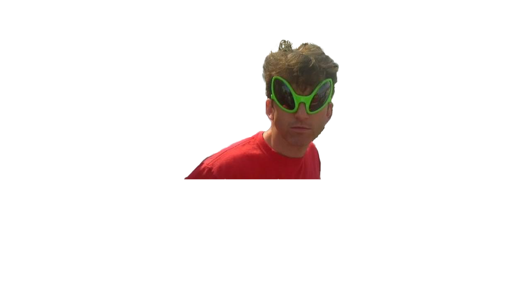

Born: April 25, 1971 in Lower Macungie Township, Pennsylvania, U.S.
1989 Graduated Emmaus High School in Emmaus, Pennsylvania.
1993 Graduated from College of William & Mary with a major in finance/business.
Recruited by Bethesda Softworks in 1994 as a game producer.
1995 Producer for The Terminator: Future Shock
1996 Worked on additional design The Elder Scrolls II: Daggerfall
1996 Production and design on SkyNet.
1998 Porject leader, design, and writer for The Elder Scrolls Adventures: Redguard.
2002 Project leader for The Elder Scrolls III: Morrowind.
2003 Executive producer for The Elder Scrolls III: Bloodmoon.
2004 Executive producer for The Elder Scrolls Travels: Shadowkey.
2006 Executive producer for The Elder Scrolls IV: Oblivion.
2007 Executive producer for The Elder Scrolls IV: Shivering Isles.
2008 Game director for Fallout 3.
2011 Game director for The Elder Scrolls V: Skyrim.
2015 Game director for Fallout 4.
2015 Executive producer for Fallout Shelter.
2018 Game director for Fallout 76.
"It just works."
-Todd Howard